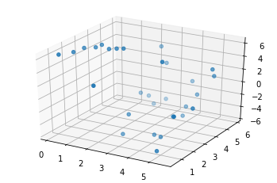
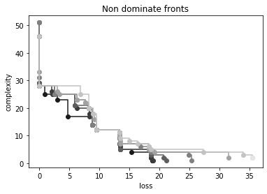
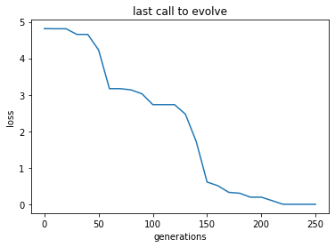

Multi-objective memetic approach
In this third tutorial we consider an example with two dimensional input data and we approach its solution using a multi-objective approach where, aside the loss, we consider the formula complexity as a second objective.
We will use a memetic approach to learn the model parameters while evolution will shape the model itself.
Eventually you will learn:
How to instantiate a multi-objective symbolic regression problem.
How to use a memetic multi-objective approach to find suitable models for your data
[1]:
# Some necessary imports.
import dcgpy
import pygmo as pg
# Sympy is nice to have for basic symbolic manipulation.
from sympy import init_printing
from sympy.parsing.sympy_parser import *
init_printing()
# Fundamental for plotting.
from matplotlib import pyplot as plt
%matplotlib inline
1 - The data
[2]:
# We load our data from some available ones shipped with dcgpy.
# In this particular case we use the problem sinecosine from the paper:
# Vladislavleva, Ekaterina J., Guido F. Smits, and Dick Den Hertog.
# "Order of nonlinearity as a complexity measure for models generated by symbolic regression via pareto genetic
# programming." IEEE Transactions on Evolutionary Computation 13.2 (2008): 333-349.
X, Y = dcgpy.generate_sinecosine()
[3]:
from mpl_toolkits.mplot3d import Axes3D
# And we plot them as to visualize the problem.
fig = plt.figure()
ax = fig.add_subplot(111, projection='3d')
_ = ax.scatter(X[:,0], X[:,1], Y[:,0])

2 - The symbolic regression problem
[4]:
# We define our kernel set, that is the mathematical operators we will
# want our final model to possibly contain. What to choose in here is left
# to the competence and knowledge of the user. A list of kernels shipped with dcgpy
# can be found on the online docs. The user can also define its own kernels (see the corresponding tutorial).
ss = dcgpy.kernel_set_double(["sum", "diff", "mul", "sin", "cos"])
[5]:
# We instantiate the symbolic regression optimization problem
# Note how we specify to consider one ephemeral constant via
# the kwarg n_eph. We also request 100 kernels with a linear
# layout (this allows for the construction of longer expressions) and
# we set the level back to 101 (in an attempt to skew the search towards
# simple expressions)
udp = dcgpy.symbolic_regression(
points = X, labels = Y, kernels=ss(),
rows = 1,
cols = 100,
n_eph = 1,
levels_back = 101,
multi_objective=True)
prob = pg.problem(udp)
print(udp)
Data dimension (points): 2
Data dimension (labels): 1
Data size: 30
Kernels: [sum, diff, mul, sin, cos]
3 - The search algorithm
[6]:
# We instantiate here the evolutionary strategy we want to use to
# search for models. Note we specify we want the evolutionary operators
# to be applied also to the constants via the kwarg *learn_constants*
uda = dcgpy.momes4cgp(gen = 250, max_mut = 4)
algo = pg.algorithm(uda)
algo.set_verbosity(10)
4 - The search
[7]:
# We use a population of 100 individuals
pop = pg.population(prob, 100)
[11]:
# Here is where we run the actual evolution. Note that the screen output
# will show in the terminal (not on your Jupyter notebook in case
# you are using it). Note you will have to run this a few times before
# solving the problem entirely.
pop = algo.evolve(pop)
5 - Inspecting the non dominated front
[12]:
# Compute here the non dominated front.
ndf = pg.non_dominated_front_2d(pop.get_f())
[13]:
# Inspect the front and print the proposed expressions.
print("{: >20} {: >30}".format("Loss:", "Model:"), "\n")
for idx in ndf:
x = pop.get_x()[idx]
f = pop.get_f()[idx]
a = parse_expr(udp.prettier(x))[0]
print("{: >20} | {: >30}".format(str(f[0]), str(a)), "|")
Loss: Model:
1.6049416203226965e-36 | c1*(x1*cos(x1) + cos(x1)) + 2*c1 + 6*cos(x0*sin(x1)) |
1.4444474582904268e-35 | c1*x0 - 2*c1 + 6*cos(x0*sin(x1)) |
1.3000027124613843e-34 | c1*x0 + 2*c1 + 6*cos(x0*sin(x1)) |
0.8559137162832793 | sin(x1) + 5*cos(x0*sin(x1)) |
3.04427756327168 | 2*c1*x1*cos(x0*sin(x1)) |
4.714418293710785 | 3*cos(x0*sin(x1)) |
8.875932935300025 | 4*cos(c1 + x0) + 1 |
9.493068363220251 | 5*cos(c1 + x0) |
13.422370193371659 | 2*c1 - 2*x0 |
13.42237019337166 | c1 - 2*x0 |
13.486758301564212 | c1 - x0 |
15.41066772551229 | 2 - x0 |
18.679277437831498 | c1 |
18.85767317484314 | 0 |
18.85767317484314 | 0 |
[14]:
# Lets have a look to the non dominated fronts in the final population.
ax = pg.plot_non_dominated_fronts(pop.get_f())
_ = plt.xlabel("loss")
_ = plt.ylabel("complexity")
_ = plt.title("Non dominate fronts")

6 - Lets have a look to the log content
[15]:
# Here we get the log of the latest call to the evolve
log = algo.extract(dcgpy.momes4cgp).get_log()
gen = [it[0] for it in log]
loss = [it[2] for it in log]
compl = [it[4] for it in log]
[19]:
# And here we plot, for example, the generations against the best loss
_ = plt.plot(gen, loss)
_ = plt.title('last call to evolve')
_ = plt.xlabel('generations')
_ = plt.ylabel('loss')
